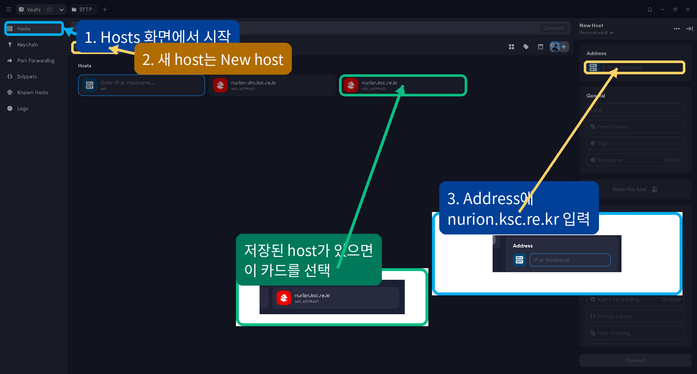
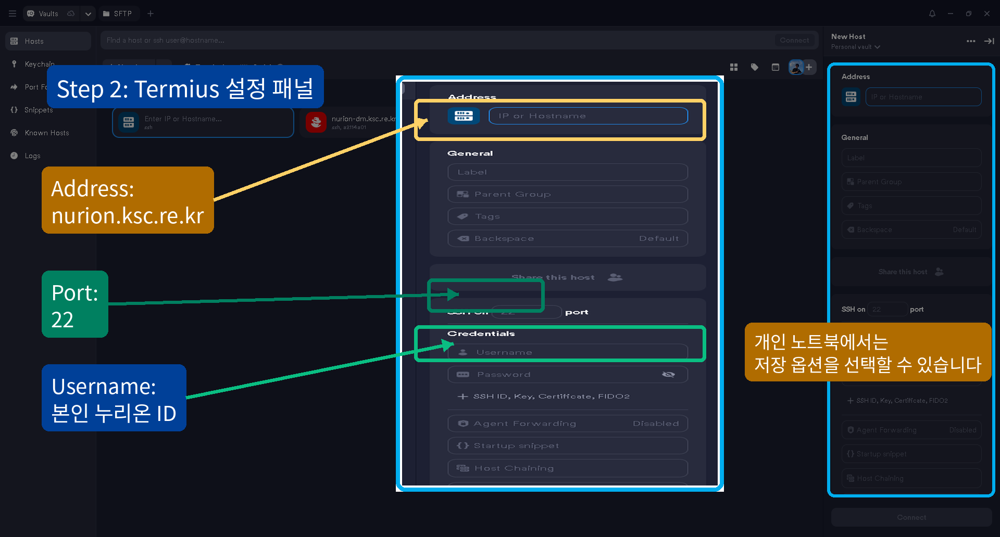
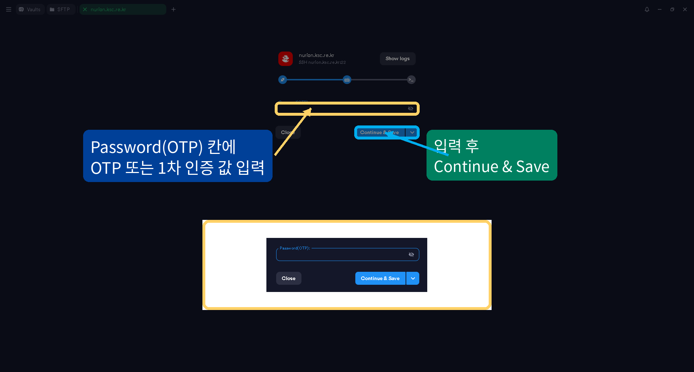
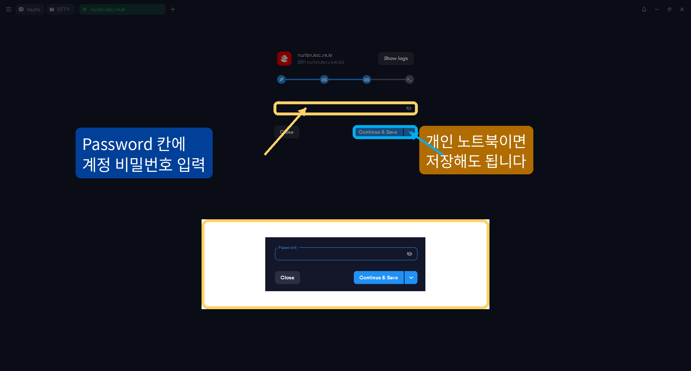
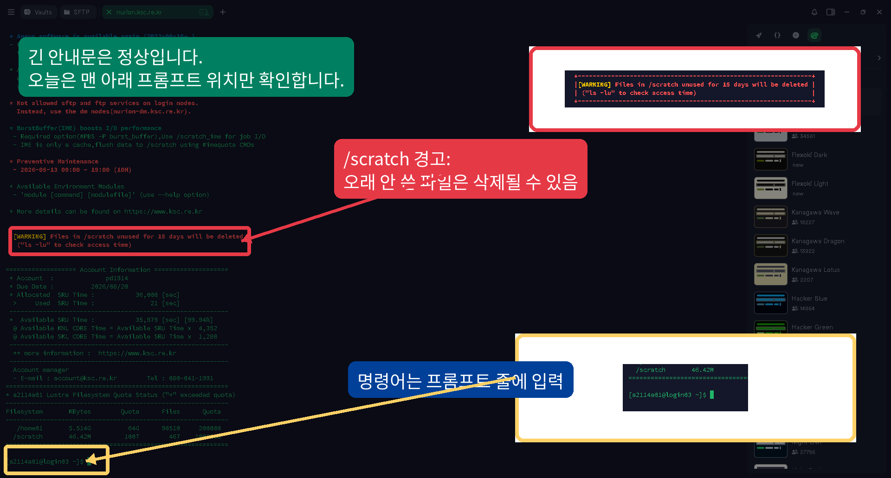
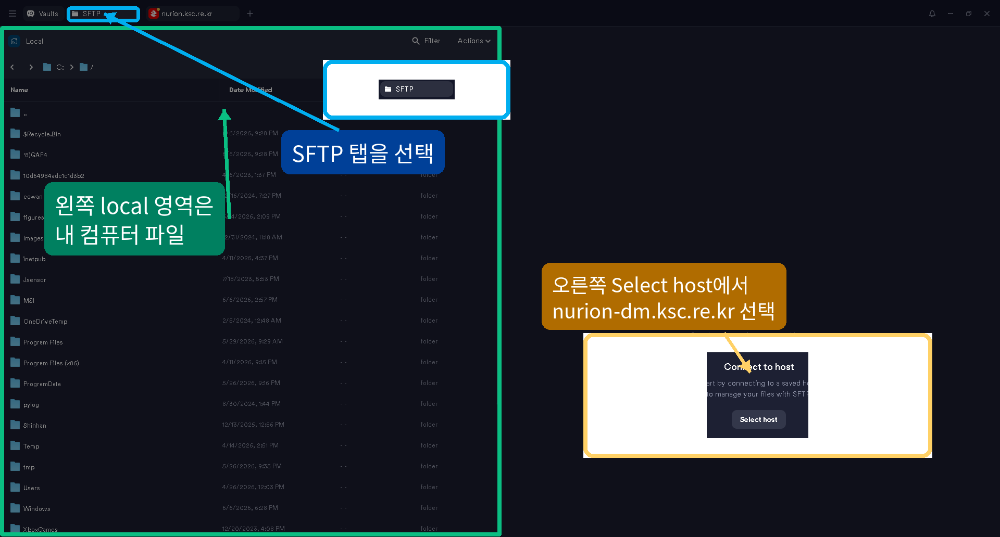

Nurion login tutorialbefore Linux terminal class
Termius로 누리온에 먼저 로그인하기
OTP → password → server$
오늘의 목표는 Termius에서 누리온에 들어가고, server$ 프롬프트와 현재 위치를 확인하는 흐름을 익히는 것이다.
Mental modeltwo computers
Termius는 내 컴퓨터 앱이고, 로그인 후 명령어는 누리온 서버에서 실행된다.
내 노트북
Termius
SSH/SFTP 연결을 시작하는 앱
→
누리온 로그인 노드
server$
리눅스 명령어를 배울 곳
→
파일 전송
SFTP
Termius의 SFTP 탭에서 다룬다.
주의: Termius 창 안에 있어도 로그인 전 화면과 로그인 후 서버 터미널은 다르다. 명령어 실습은 누리온 접속 후에 시작한다.
Step 1open Termius
먼저 Termius를 열고 Hosts 화면에서 누리온 host를 준비한다.

Step 2host settings
Termius host에는 누리온 주소와 본인 계정 정보를 입력한다.

Real exampleOTP screen
첫 번째 입력 창에는 OTP 또는 1차 인증 값을 입력한다.

Real examplepassword screen
두 번째 입력 창에는 누리온 계정 비밀번호를 입력한다.

First connectionfingerprint question
처음 접속하면 Termius가 서버 연결 확인을 물을 수 있다.
The authenticity of host 'nurion.ksc.re.kr (...)' can't be established.
Are you sure you want to continue connecting (yes/no/[fingerprint])?
Termius 화면에서는 Accept, Continue, 또는 Yes 같은 버튼으로 보일 수 있다. 주소가 nurion.ksc.re.kr인지 확인하고 진행한다.
Login bannerdo not read everything now
로그인에 성공하면 Termius 터미널에 긴 누리온 안내문이 보인다.

Prompt ruledo not type server$
Termius 터미널에서 server$는 실행 위치를 알려주는 표시다.
실제로 입력할 내용
hostname
server$ 뒤에 있는 명령어만 입력한다.
복사하면 안 되는 내용
server$ hostname
server$까지 복사하면 명령어가 아니다.
Step 3confirm where you are
로그인에 성공하면 바로 세 가지를 확인한다.
server$ hostname
server$ whoami
server$ pwd
hostname
서버 이름 확인. 예: login01
whoami
내 계정 ID 확인.
pwd
현재 폴더 위치 확인.
Expected resultwhat success looks like
성공하면 대략 이런 결과를 본다.
server$ hostname
login01
server$ whoami
내_사용자ID
server$ pwd
/home01/내_사용자ID
여기까지 되면 리눅스 터미널 수업을 시작할 준비가 끝난 상태다.
Previewhome and scratch
나중에 큰 작업을 할 때는 home과 scratch를 구분한다.
/home01/$USER
- 로그인 후 처음 보이는 내 공간
- 중요 파일 보관
- 입력 파일과 결과 백업
/scratch/$USER
- 큰 작업을 위한 임시 공간
- 나중에 정리될 수 있음
- 자세한 사용법은 homework에서 읽기
오늘 첫 단계는 로그인이다. 파일 이동은 리눅스 기본 명령을 배운 뒤 다시 다룬다.
File transferTermius SFTP + data mover node
파일 전송은 Termius의 SFTP 탭에서 nurion-dm.ksc.re.kr로 접속한다.

Troubleshootinglogin problems
로그인이 안 될 때는 에러 메시지를 그대로 본다.
Permission denied
ID 또는 비밀번호 오류 가능성이 크다.
Could not resolve hostname
주소 오타 또는 네트워크 문제를 확인한다.
Connection timed out
네트워크/VPN/방화벽 문제일 수 있다.
질문할 때는 마지막 에러 메시지 한 줄을 그대로 보여 준다.
Logoutend the session safely
수업이 끝나면 exit로 누리온 접속을 종료한다.
server$ exit
Connection to nurion.ksc.re.kr closed.
Termius 세션이 닫히거나 host 화면으로 돌아오면 로그아웃된 상태다.
Readystart Linux terminal class
이제 모두가 누리온 안에 있다. 여기서 리눅스 명령어를 배운다.
server$ pwd
server$ ls
server$ mkdir -p ~/linux-practice
server$ cd ~/linux-practice
다음 발표 자료: linux_command_tutorial_presentation.html
Title
1 / 16